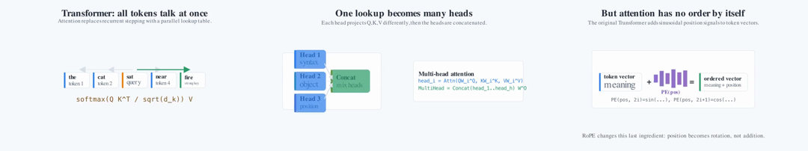
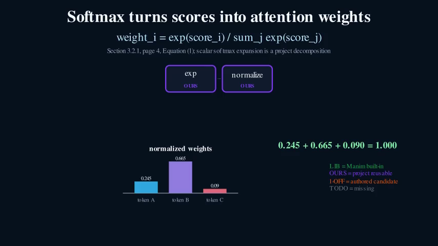
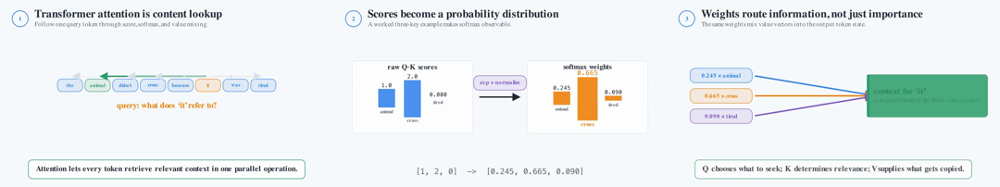
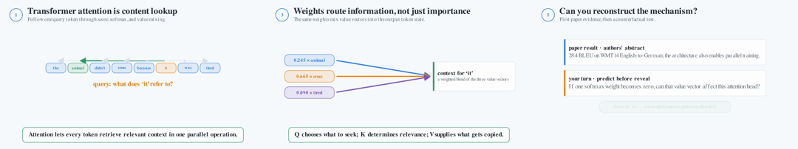

4 blocked
DeepPresenter
Current upstream path needs sandbox, browser conversion, and office tooling absent on Babel.
0 provider calls · $0 measured provider spendResearch snapshot · July 2026
4blue2brown turns papers and code into editable slides and programmatic Manim scenes. Every public claim is tied to a run state, an artifact, or an explicit blocker.
The unit of progress is not a video count. It is an artifact with provenance and a completion contract.
Overview / evidence ledger
Counts below are snapshots of repository evidence, not estimates. “Partial” means a playable artifact exists but one or more completion requirements are missing.
| Thread | Measured state | Evidence present | Boundary |
|---|---|---|---|
| 01Real video pipelines | 0 full · 10 partial · 2 blocked | Ten playable artifacts, probes or reviews, and per-cell manifests | Missing provenance or cost fields prevent “full” |
| Paper-to-slides | 0 full · 0 partial · 4 smoke · 8 blocked | Four native PDF parse artifacts from SlideGen | Smoke outputs are not generated decks |
| 03Slides + Manim | 1 methodology clip · 2 planned missing | SlideIR, SceneIR, poster, MP4, lineage, and Babel job evidence | Architecture and performance slots are not built |
| 04Backtranslation | 8 / 10 references · 2 source-static | Pinned source, render traces, normalized reference inventory | One-shot and self-refined conditions are blocked |
Every required stage, deliverable, provenance field, review, and cost record is present.
A real artifact exists, but the completion contract is not closed.
A real early-stage run validates a narrow boundary, not the complete pipeline.
No qualifying artifact exists for that cell; the missing dependency is named.
Existing Manim, Code2Video, and paper-to-video paths
12 declared cells. Ten contain real playable artifacts and remain partial. DPO is blocked for the two external pipelines.
| Pipeline | Transformers | DPO | FeynRL | RoPE |
|---|---|---|---|---|
| Code2Videoupstream repository | blockedno paid run | |||
| Paper2Manimupstream repository | blockedno paid run | |||
| In-house v0project native |

Source of truth: experiments/real_video_matrix/v1/report.json. Synthetic baseline-coverage media is intentionally excluded from this matrix.
Paper-to-slides baseline pipelines
4 smoke, 8 blocked. SlideGen parsed four exact paper revisions. DeepPresenter and ArcDeck stopped before qualifying artifacts.
Current upstream path needs sandbox, browser conversion, and office tooling absent on Babel.
0 provider calls · $0 measured provider spendExact-version PDFs became native Markdown parse artifacts after a dependency-only compatibility pin.
Transformers 47 KB · DPO 133 KB · FeynRL 61 KB · RoPE 61 KBThe provider stage failed closed because no frozen rate card or per-run usage ledger existed.
0 provider calls · $0 measured provider spendPaper2Slides parsed an 18-page FeynRL PDF, extracted seven tables and nine figures, then planned eight slides. OCR damaged some notation and the plan invented a long-form expansion for “P3O”.
Generation stopped when the provider returned Multi-modal output is not supported. The artifact is partial historical fallback evidence, not a completed deck.


Source of truth: experiments/slides_baselines/v1/results.json. The four smoke artifacts are parser outputs, not slide decks.
Our main pipeline and bottom-up exploration
One real fusion slot. A methodology SlideIR resolves to a Babel-rendered softmax clip. Architecture and performance slots stay planned and missing.

86568917…c87Bottom-up formula explainer
Validated SlideIR, SceneIR, rendered video, poster, citation, and lineage.
No reviewed Q/K/V dataflow SceneIR or media pair exists yet.
No paper-grounded performance chart SceneIR or validated media pair exists yet.
Five render, inspect, and repair rounds
Compare the project-native v0, the first causal rewrite, and the fifth-round oral visual. Synthetic baseline-coverage media is excluded. Scores are structured self-review, not a human study.


Claim boundary: “oral-ready” means at least 16/20 on the local rubric, with no category below 3. The clips are silent visual segments with optional English captions. No independent audience study establishes that a general viewer will understand them.
Sources: runs/formula_explainer/build/build_summary.json, canonical_graph_fragment.json, and experiments/slides_manim/methodology_attention_softmax.slide-ir.json.
Reconstruction as an improvement signal
8 of 10 reference videos normalized. Two pinned upstream scenes are source-exact but static, so no MP4 exists. Generation conditions remain blocked.
Pinned Manim Community v0.20.1 at commit 1157b746…f4. No ordinary YouTube videos were downloaded or rehosted.
The validation adapter records calls only. It is not a real video-capable model and cannot support a public comparison claim.
This condition must begin from the exact one-shot code and use only policy-allowed render feedback. Manual edits are forbidden.
Publishable source-reference subset
These are upstream Manim Community gallery renders, not model generations. Each file is H.264, 854×480, 15 fps, yuv420p, and has no audio.
MIT notices: Manim license and community notice. Inventory: fd040602…fb514.
Planned feedback use: repeated failures update primitive retrieval, scene planning, render repair, slide layout, and learner-facing evaluation. The loop is implemented as a protocol boundary; real model-driven iterations have not started.
Public development set only. The scenes are source-available and may have appeared in model training data, so this does not establish out-of-distribution generalization.